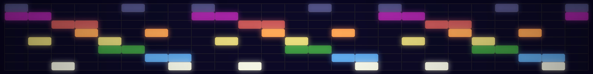

Lattice topology research proving cubic networks leave 6.1× connectivity on the table.
Every computation — neural networks, simulations, databases — defaults to cubic lattice topology: 6-connected grids. Each node talks to 6 neighbors along 3 axis-aligned directions. It's the geometry of spreadsheets, voxel grids, and attention heads. Nobody chose it. It was just… there.
The FCC lattice gives each node 12 neighbors along 6 face-diagonal directions. Its Voronoi cell is the rhombic dodecahedron — a 14-vertex polyhedron whose 8 cube corners and 6 octahedral bridges tessellate all of 3D space. Kepler proved it packs spheres optimally in 1611. Hales confirmed it in 2005.
Heterogeneous weights create near-disconnection cuts — bottlenecks where information barely flows. The Fiedler value (algebraic connectivity) measures the worst such bottleneck.
In a cubic lattice, each node has 5 alternative routes around a blocked connection. In the FCC lattice, it has 11. The more heterogeneous the weights, the more the FCC advantage grows.
We built a Hermes Agent
equipped with the rhombic library as live tools. It runs experiments,
generates visualizations, and explains the geometry — all in natural conversation.
lattice_compare
Build matched SC/FCC lattices, compute stats
fiedler_ratio
Weighted algebraic connectivity comparison
direction_weights
Direction-pair weighting (6.1× finding)
spectral_analysis
RD Laplacian spectrum under 4 distributions
prime_vertex_map
Exhaustive prime-vertex optimization
permutation_control
Shuffled vs sorted permutation test (p=0.001)
explain_mechanism
Structured explanation at 3 depth levels
visualize_rd
3D rhombic dodecahedron visualization
visualize_amplification
Paper 2 Figure 3: amplification gradient
The cube isn't the enemy — it's the skeleton. The rhombic dodecahedron contains the cube: its 8 trivalent vertices ARE the cube's corners. The 6 tetravalent vertices are the bridges that convert cubic topology into space-filling FCC.
RhombiLoRA adds a learnable n×n bridge matrix between LoRA's A and B projections. At n=6, a cybernetic feedback mechanism (the Steersman) discovers rhombic dodecahedral geometry: 100% block-diagonal bridges across 42,500+ matrices, four model families (1.1B–14B), peak coupling ratio 82,854:1. Both papers submission-ready after 7-round adversarial audit.
"Data symmetry analytically determines representation geometry." — Karkada et al., 2026
If data symmetry determines embedding geometry, then the adapter's topology should match the data's symmetry structure. RhombiLoRA is that match.

pip install rhombic
@unpublished{bielec2026shape,
author = {Timothy Paul Bielec},
title = {The Shape of the Cell: Empirical Comparison of
Cubic and {FCC} Lattice Topologies},
note = {Promptcrafted LLC},
year = {2026}
}
@unpublished{bielec2026weighted,
author = {Timothy Paul Bielec},
title = {Structured Edge Weights Amplify {FCC} Lattice
Topology Advantages via Bottleneck Resilience},
note = {Promptcrafted LLC},
year = {2026}
}
@unpublished{bielec2026bridge,
author = {Timothy Paul Bielec},
title = {The Learnable Bridge: Cybernetic Feedback Discovers
Rhombic Dodecahedral Geometry in Multi-Channel {LoRA}},
note = {Promptcrafted LLC},
year = {2026}
}